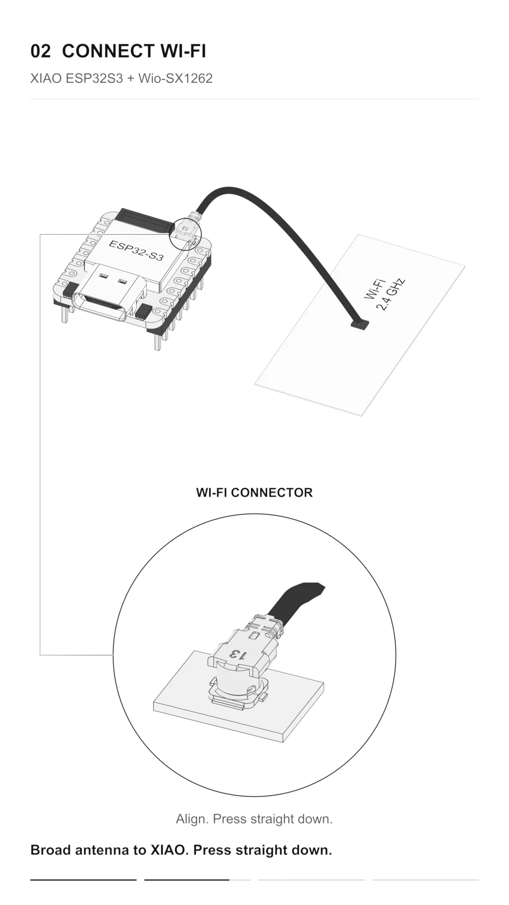

Instructions & options
Layout preview
This concept uses chapter stills. Select a chapter below to compare the layout.
The finished viewer would keep continuous scrolling, an optional still mode and written assembly instructions here.
Connector circles show enlarged views of the same connection.
